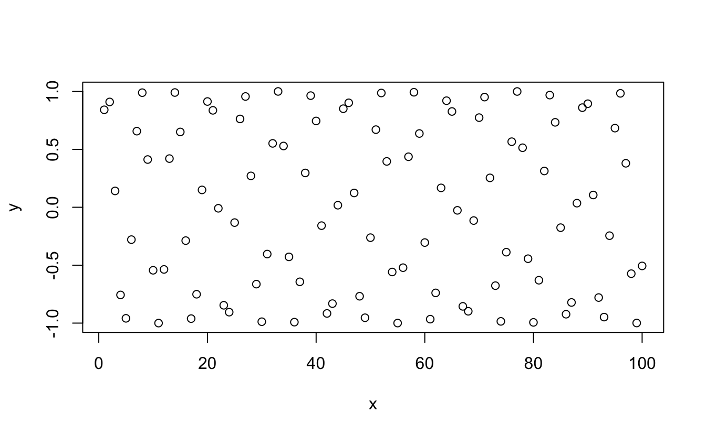
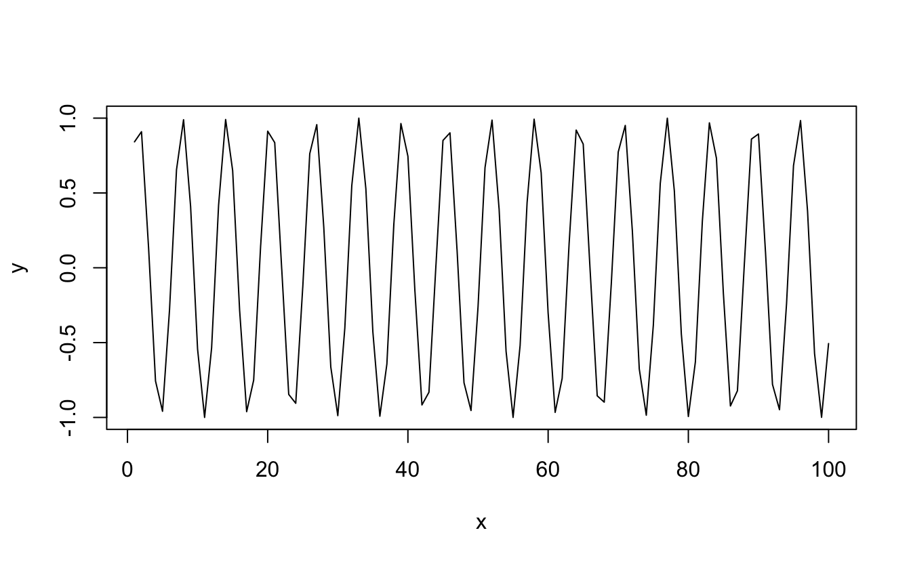
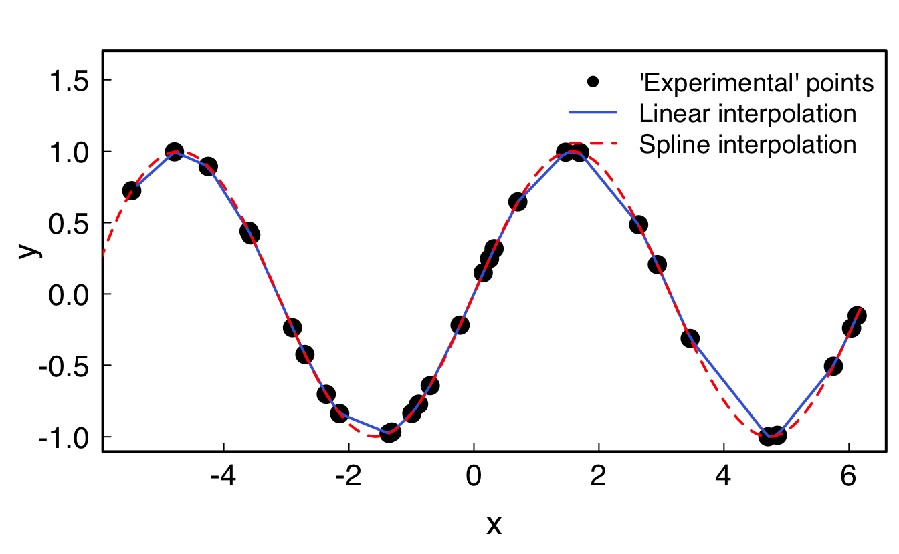

geom_mean <- function(x, y){
a <- sqrt(x*y)
}
geom_mean(1,2)9 Functions
Functions should become a really important part of your coding routine. Basically, consider making this your new moto:
Your new moto
If you need to copy-paste, write a function instead.
9.1 Definition
To get the manual on a base function, type ?function_name.
A function returns the last thing that is called in it. Thus a function defined like that will return nothing:
While either of these three functions will return what you want:
geom_mean1 <- function(x, y){
a <- sqrt(x*y)
a
}
geom_mean2 <- function(x, y){
a <- sqrt(x*y)
return(a)
}
geom_mean3 <- function(x, y){
sqrt(x*y)
}
geom_mean1(1,2) #returns a#> [1] 1.414214While an explicit call to return() is not necessary, I think it’s usually a good practise to write it explicitly to make clearer to the reader what the function actually returns.
The result of a function can be a list, a data.frame, a vector… or nothing. And you can attribute the result of a function to a variable:
9.2 Default values
One can add default values to variables by specifying them in the function definition:
testfunc <- function(x, y=1){
x*y
}
testfunc(1)#> [1] 1testfunc(1, y=2)#> [1] 2testfunc(1:3, y=.1)#> [1] 0.1 0.2 0.39.3 Passing arguments to other functions
One can also pass arguments to other functions within the function, without have to specify all of them:
testfunc2 <- function(x, ...){
y <- sin(x)
plot(x, y, ...)
}
# Here, `...` represents all the arguments you could provide to `plot()`
testfunc2(1:100)
testfunc2(1:100, type="l")

You can also pass a function as argument:
testfunc3 <- function(FUN, ...){
FUN(...)
}
testfunc3(sum, 1:10)#> [1] 55testfunc3(plot, 1:10, sin(1:10), type="l")
9.4 Error handling
It is good practise to handle possible errors in your functions, especially if you share them with others. As a general rule of thumb, you can be sure that someone will always be able to find the one case where your function does not work or works in an unexpected way.
For this, the easiest way is to use if() statements together with warning("Warning message") or stop("Stopping message"), to either raise a warning while continuing the function, or stop the function altogether with an explanatory message. Alternatively and for ease of reading, the statement if(condition) stop("Stopping message") can be replaced by stopifnot(condition is true).
Equivalent example with stop() and stopifnot():
test <- function(x, y) {
if(!is.numeric(x) | !is.numeric(y)){
stop("Both x and y should numeric vectors, buddy!")
}
if(length(x) != length(y)){
if(length(x) == 1 | length(y) == 1){
warning(glue::glue("x has length {length(x)}, while y has length {length(y)}, are you sure?"))
}else{
stop(glue::glue("Both x and y should have same length or length of 1.\n
Here x has length {length(x)}, while y has length {length(y)}."))
}
}
return(x*sqrt(y))
}test(x=1:2,y=1)#> [1] 1 2test(x=1:2,y="A")#> Error in test(x = 1:2, y = "A"): Both x and y should numeric vectors, buddy!test(x=1:2,y=3:4)#> [1] 1.732051 4.000000test(x=1:2,y=3:10)#> Error in test(x = 1:2, y = 3:10): Both x and y should have same length or length of 1.
#>
#> Here x has length 2, while y has length 8.test <- function(x, y) {
# the condition is the opposite from the one used in stop():
stopifnot(is.numeric(x), is.numeric(y))
stopifnot(length(x) == length(y) | length(x) == 1 | length(y) == 1)
if(length(x) != length(y) & (length(x) == 1 | length(y) == 1)){
warning(glue::glue("x has length {length(x)}, while y has length {length(y)}, are you sure?"))
}
return(x*sqrt(y))
}test(x=1:2,y=1)#> [1] 1 2test(x=1:2,y="A")#> Error in test(x = 1:2, y = "A"): is.numeric(y) is not TRUEtest(x=1:2,y=3:4)#> [1] 1.732051 4.000000test(x=1:2,y=3:10)#> Error in test(x = 1:2, y = 3:10): length(x) == length(y) | length(x) == 1 | length(y) == 1 is not TRUE9.5 Documenting your function
It is also good practise to document your function by describing its purpose, its input parameters, its output, and some use cases. For this, the syntax is as follows:
#' Title of the function
#'
#' Description of the function
#'
#' @param param1 Description of param1
#' @param param2 Description of param2
#'
#' @return Description of the output
#'
#' @examples
#' # Some examples on how to use the function
my_func <- function(param1, param2) {
# do some stuff
}RStudio simplifies this process with a tool available in Code > Insert Roxygen skeleton (just place your cursor within the {} of the function before clicking this).
9.6 Interpolation of data
It is possible to interpolate data through the approxfun() and splinefun() functions: while the former uses linear interpolation, the latter uses cubic splines (polynomials).
xmin <- -2*pi; xmax <- 2*pi
x <- runif(30, min=xmin, max=xmax)
xx <- seq(xmin, xmax, .1)
y <- sin(x)
# Linear interpolation
lin_interp <- approxfun(x,y) #is a function
lin_interp(0); lin_interp(pi)#> [1] 0.005349987#> [1] -0.06118169yy_lin <- approx(x, y, xout=xx) #is a list containing x and y
# Cubic spline interpolation
spl_interp <- splinefun(x,y) #is a function
yy_spl <- spline(x, y, xout=xx) #is a list containing x and y
par(family = "Helvetica", cex.lab=1.5, cex.axis=1.4,
mgp = c(2.4, .5, 0), tck=0.02, mar=c(4, 4, 2, .5), lwd=2, las=1)
plot(x, y, pch=16, cex=2, ylim=c(-1,1.6))
lines(xx, lin_interp(xx), col="royalblue") # equivalent to: lines(yy_lin, col="royalblue")
lines(xx, spl_interp(xx), col="red", lty=2)# equivalent to: lines(yy_spl, col="red")
legend("topright",
cex=1.2,
lty=c(NA, 1, 2),
lwd=c(NA, 2, 2),
pch=c(16, NA, NA),
col=c("black", "royalblue", "red"),
bty = "n",
legend=c("'Experimental' points", "Linear interpolation", "Spline interpolation")
)
9.7 Exercises
Download the archive with all the exercises files, unzip it in your R class RStudio project, and edit the R files.